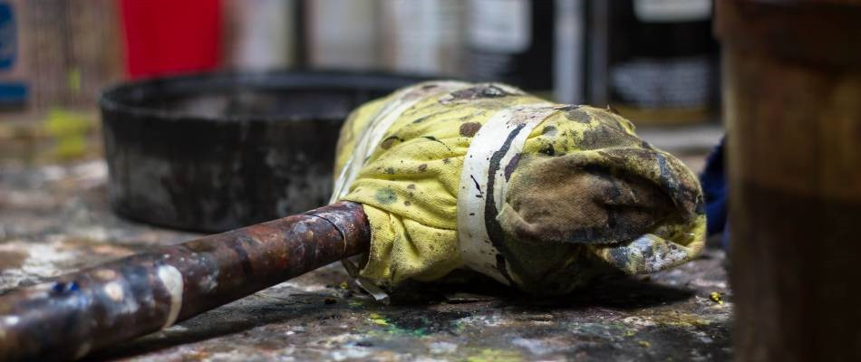
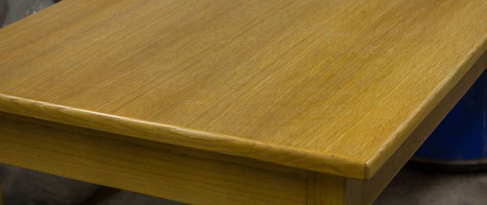
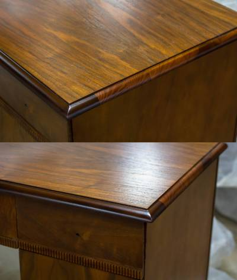

Furniture Refinishing


Brand new wood furniture usually comes with a beautiful, sleek coating that provides a stylish look. However, the finish on your wooden furniture is more important than just its looks - it offers insight to your furniture's health. When wardrobes, chests, mirrors and chairs begin to look dull and unsightly, it may be time to consider our furniture refinishing services.
What is Furniture Refinishing?
Most wood furniture requires very little maintenance, which is one reason people invest in quality wood pieces for their home. With little to do and a long life span, what's to lose? Unfortunately, many furniture owners don't realize that some maintenance is required to keep their pieces looking new and in their best shape. Often times, especially with antique or heirloom items, furniture refinishing is necessary.
Furniture refinishing is the process of applying a new protective coating on the item. Wooden furniture is first stripped of its original finish, often by sanding. After this layer has been removed, an expert furniture refinisher will apply a stain, seal the furniture and then add the protective coating. This process maintains the wood look of your furniture and is a better alternative to painting as it holds up for many years.
Ablyss has provided professional furniture refinishing for years and offers quality refinishing services for all furniture pieces.
How Furniture Refinishing Extends Quality

Furniture refinishing is an economical way to extend the life of your high-quality furniture or pieces with sentimental value. While the finish helps the furniture make a statement, it also protects against water damage, dust, dirt and debris, as well as other environmental factors that age your furniture. A weak or deteriorating finish can't do as great of a job at protecting your piece as a new finish can.One large perk of furniture refinishing is that it allows you to change the look of the chair, dresser, chest or any other wooden piece. If you were previously unhappy with the color or find that the appearance is dated, furniture refinishing is a cost-effective way to upgrade the appearance (by way of a new stain color) without having to purchase an entirely new piece. This is not only good for your wallet - it's environmentally friendly!
When Furniture Refinishing is a Good Idea
Since furniture refinishing isn't a regular need, many wonder when exactly it should be done. The pieces in your home may be ready for a refinishing if:
Current finish is flaking, missing or dull
The pieces has been neglected or in storage for a long period of time
You no longer love the color or outward appearance
Consider Us for Furniture Refinishing
Ablyss has knowledge and years of experience when it comes to furniture refinishing. Before settling for new furniture or attempting this arduous process on your own, consider our expert team's ability to carefully refinish your furniture with quality workmanship in mind. Contact us on 303.935.0949 for more information if you think furniture refinishing is necessary to extend the lifespan of your favorite furniture pieces.